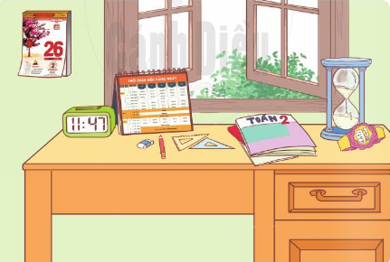
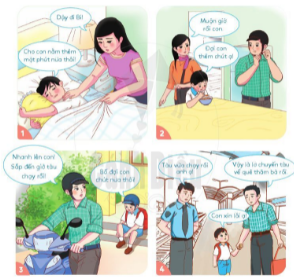
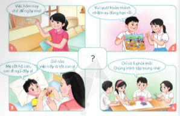

ĐẠO ĐỨC TUẦN 1
Thời gian áp dụng: Từ ngày …………….. đến ngày …………………
CHỦ ĐỀ: QUÝ TRỌNG THỜI GIAN
BÀI 1: QUÝ TRỌNG THỜI GIAN (tiết 1)
(1 tiết)
I. YÊU CẦU CẦN ĐẠT
1. Năng lực đặc thù:
- Nêu được một số biểu hiện của quý trọng thời gian
- Nêu được vì sao phải quý trọng thời gian
- Thực hiện được việc sử dụng thời gian hợp lí.
2. Năng lực chung:
- Năng lực giao tiếp, hợp tác: Trao đổi, thảo luận để thực hiện các nhiệm vụ học tập.
- Năng lực giải quyết vấn đề và sáng tạo: Sử dụng các kiến thức đã học ứng dụng vào thực tế.
2. Phẩm chất: Hình thành phẩm chất chăm chỉ, trách nhiệm.
II. ĐỒ DÙNG DẠY HỌC
1. Đối với giáo viên:
- Video bài giảng điện tử
2. Đối với học sinh:
- SGK, bút chì.
III. CÁC HOẠT ĐỌNG DẠY HỌC
Hoạt động của giáo viên | Hoạt động của học sinh |
A. Khởi động: Mục tiêu: Tạo hứng thú cho HS vào bài học và giúp HS có hiểu biết ban đầu về bài học mới. Cách tiến hành: - GV chiếu hình ảnh và tổ chức cho HS chơi trò chơi “Tìm đồ vật chỉ thời gian”.  - GV chốt đáp án. - GV dẫn dắt: Như các em đã tìm thấy có rất nhiều đồ vật chỉ thời gian. Đó là những đồ vật nhắc nhở chúng ta phải biết quý trọng thời gian, bởi từng giây từng phút nó quý hơn vàng bạc, các em có biết không. Vậy chú ta quý trọng thời gian như thế nào, chúng ta cùng đến với bài học hôm nay, Bài 1: Qúy trọng thời gian (tiết 1) B. Khám phá: Hoạt động 1: Kể chuyện theo tranh và trả lời câu hỏi Mục tiêu: HS hiểu biết được ý nghĩa của việc quý trọng thời gian. Cách tiến hành: - GV cho HS quan sát tranh  - GV cho HS xem câu chuyện “Chuyện bạn Bi” - Gv yêu cầu HS kể tóm tắt nội dung câu chuyện cho người thân cùng nghe. + Khi làm mọi việc, bạn Bi có thói quen gì? + Thói quen đó đã dẫn đến điều gì? + Em rút ra điều gì từ câu chuyện trên?
- GV chốt đáp án và kết luận: Khi đã làm việc gì, chúng ta cần đề ra kế hoạch, dành thời gian, tập trung vào công việc không nên chậm trễ như bạn Bi trong câu chuyện. Qúy trọng thời gian giúp chúng ta hoàn thành công việc với kết quả tốt nhất. Hoạt động 2: Tìm hiểu một số biểu hiện của việc quý trọng thời gian Mục tiêu:HS hiểu biết được những biểu hiện của việc quý trọng thời gian. Cách tiến hành: - GV cho HS quan sát tranh  + Em có nhận xét gì về việc sử dụng thời gian của các bạn trong tranh?
+ Theo em, thế nào là biết quý trọng thời gian?
- GV chốt đáp án nêu một số biểu hiện của việc quý trọng thời gian. C. Vận dụng: Mục tiêu: Giúp HS vận dụng kiến thức đã học để chia sẻ và thực hiện những việc làm thể hiện sự quý trọng thời gian. Cách tiến hành: Giao nhiệm vụ hãy lập thời gian biểu cho ngày nghỉ của mình.
|
- HS quan sát tranh
- Đồ vật chỉ thời gian: đồng hồ để bàn, đồng hồ đeo tay, lịch để bàn, đồng hồ cát.
- HS lắng nghe GV trình bày
- HS quan sát tranh
- HS lắng nghe.
- HS ở nhà kể tóm tắt câu chuyện.
- Nói với bố mẹ: Đợi con một lúc. - Trễ chuyến tàu về thăm bà. - Phải nhanh nhẹn, sắp xếp công việc hợp lí,… - HS lắng nghe
- HS quan sát tranh
+ Các bạn trong tranh rất quý trọng thời gian, sử dụng thời gian hợp lí. + Qúy trọng thời gian là biết sử dụng thời gian một cách tiết kiệm và hợp lí. -HS lắng nghe
- HS lắng nghe nhiệm vụ của GV . |
IV. ĐIỀU CHỈNH SAU BÀI DẠY:
Học sinh hiểu và biết sử dụng thời gian một cách tiết kiệm và hợp lí.